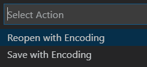
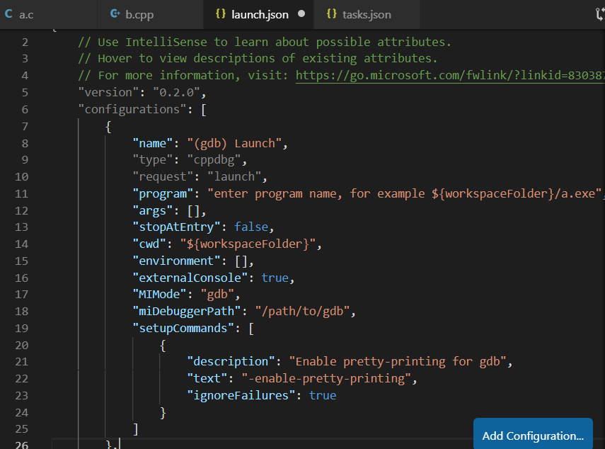
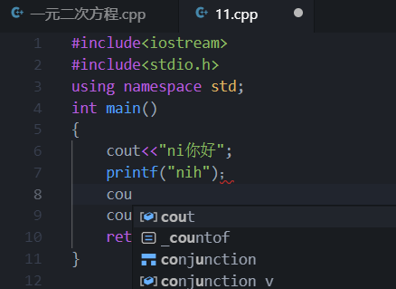

复制解压出来的bin目录的地址
右击此电脑选择属性
点击环境变量
点击Path，选择编辑 新建，将复制的目录位置粘贴到此，确定
新建，将复制的目录位置粘贴到此，确定
将MinGW解压到一个合适的目录，比如我解压到C:\Program Files下，找到解压的目录
复制解压出来的bin目录的地址 右击此电脑选择属性 点击环境变量 点击Path，选择编辑
在桌面上按住shift点击鼠标右键-在此处打开powershell， 输入gcc -v,看到如下界面说明环境变量配置成功
建议在配置之前新建一个目录专门用来存储C/CPP文件，因为配置设置VS Code会默认保存到配置时文件的目录下。
新建一个C文件Code就会提示安装相关插件
安装拓展
我们写点代码，然后进入调试界面，左边第三个为调试界面，然后点击绿色小三角
就会弹出环境选项，我们选择第一个这里我们先选择第一个gcc.exe，这个选项会生成gcc编译的task，同时生成lauch.json，顺利的话会同时编译调试当前代码
为插件开发者点赞，一键生成配置省去不少步骤。然后我们来看一下生成的两个文件。
- task.json 可以看到已经自动添加了编译命令
gcc -g ${file} -o {fileBasenameNoExtension}.exe,这个命令会将我们的a.c编译生成a.exe- launch.json
如果你仅仅编写C语言文件，到此 VS Code已经能够满足你的要求。编写好文件，设置断点，点击绿色小三角或者使用快捷键F5进行调试即可
不过，我们看到控制台输出了乱码，原因在于VS Code默认编码为UTF-8，而我们用的中文系统的控制台默认编码为GBK，只需要更改VS Code保存编码
点击右下角的UTF-8点击第二个 save with encoding 接着在框内输入gbk，点击下面的选项即可可以看到已经可以正常输出
F10逐过程，F11逐语句。
好了，至此C环境已经配置完成。如果你只需要编写C的话下面的不用看了我们参照已经生成的C的配置文件
打开lauch.json,点击Add Configuration，选择箭头所指的（gdb）lauch可以看到为我们生成的新调试方式
对比着之前的gcc调试方式，我们需要修改一点细节,从之前生成的复制过来修改lauch.json，主要修改这几个选项
- program
${fileDirname}\\${fileBasenameNoExtension}.exe- miDebuggerPath
复制之前生成的- externalConsole
false- 添加preLaunchTask
name也可以修改下，让自己能识别是哪个命令就行。 完成后的lauch.json
{
// Use IntelliSense to learn about possible attributes.
// Hover to view descriptions of existing attributes.
// For more information, visit: https://go.microsoft.com/fwlink/?linkid=830387
"version": "0.2.0",
"configurations": [
{
"name": "(g++) Launch",
"type": "cppdbg",
"request": "launch",
"program": "${fileDirname}\\${fileBasenameNoExtension}.exe",
"args": [],
"stopAtEntry": false,
"cwd": "${workspaceFolder}",
"environment": [],
"externalConsole": false,
"MIMode": "gdb",
"miDebuggerPath": "C:\\Program Files\\mingw64\\bin\\gdb.exe",
"preLaunchTask": "g++",
"setupCommands": [
{
"description": "Enable pretty-printing for gdb",
"text": "-enable-pretty-printing",
"ignoreFailures": true
}
]
},
{
"name": "gcc",
"type": "cppdbg",
"request": "launch",
"program": "${fileDirname}\\${fileBasenameNoExtension}.exe",
"args": [],
"stopAtEntry": false,
"cwd": "${workspaceFolder}",
"environment": [],
"externalConsole": false,
"MIMode": "gdb",
"miDebuggerPath": "C:\\Program Files\\mingw64\\bin\\gdb.exe",
"setupCommands": [
{
"description": "Enable pretty-printing for gdb",
"text": "-enable-pretty-printing",
"ignoreFailures": true
}
],
"preLaunchTask": "gcc"
}
]
}
然后我们打开task.json,按照之前生成的gcc编译命令，添加g++编译命令.只需将之前的复制更改
- label
g++- command
复制之前生成的，将gcc.exe改成g++.exe
完成后的task.json
{
"tasks": [
{
"type": "shell",
"label": "gcc",
"command": "C:\\Program Files\\mingw64\\bin\\gcc.exe",
"args": [
"-g",
"${file}",
"-o",
"${fileDirname}\\${fileBasenameNoExtension}.exe"
],
"options": {
"cwd": "C:\\Program Files\\mingw64\\bin"
}
},
{
"type": "shell",
"label": "g++",
"command": "C:\\Program Files\\mingw64\\bin\\g++.exe",
"args": [
"-g",
"${file}",
"-o",
"${fileDirname}\\${fileBasenameNoExtension}.exe"
],
"options": {
"cwd": "C:\\Program Files\\mingw64\\bin"
}
}
],
"version": "2.0.0"
}
回到我们的调试界面，已经可以看到添加的g++调试选项,修改保存编码为GBK，调试成功
至此，你的 VS Code 已经可以编译调试C/C++了 ，当然是在我们创建的目录下的c/cpp文件。
如果你的电脑同时安装了VS的话，会出现头文件的提示错误，并且有些函数无法自动补全。原因在于VS Code会默认使用msvc编译和VS的头文件目录，如果你没有安装VS的话，VS Code当然不会找到msvc及VS头文件相关配置目录，就会默认使用gcc
将默认编译器更改为gcc即可
我们可以看到在setting.json里多了默认gcc的设置
不会再提示头文件的错误，也会检查代码错误了

效果如下
本编文章面向未使用过 VS Code 的用户及编程初学者。如果您正在寻找一款轻量化，颜值高的文本编辑器，同时又有轻度调试需求的话，不妨试试VS Code。